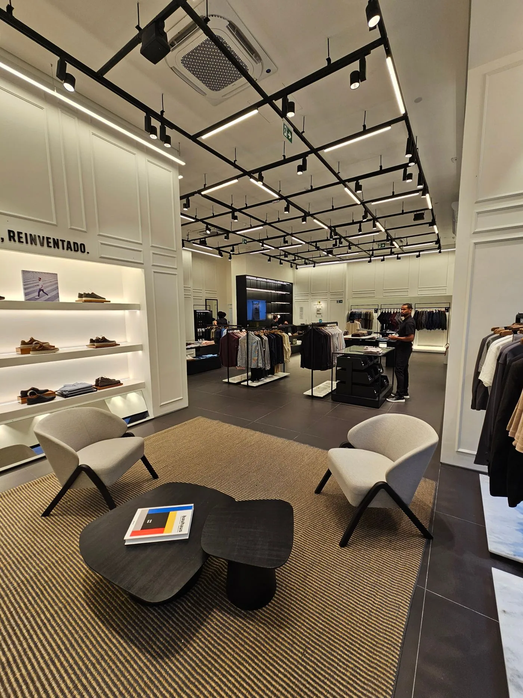
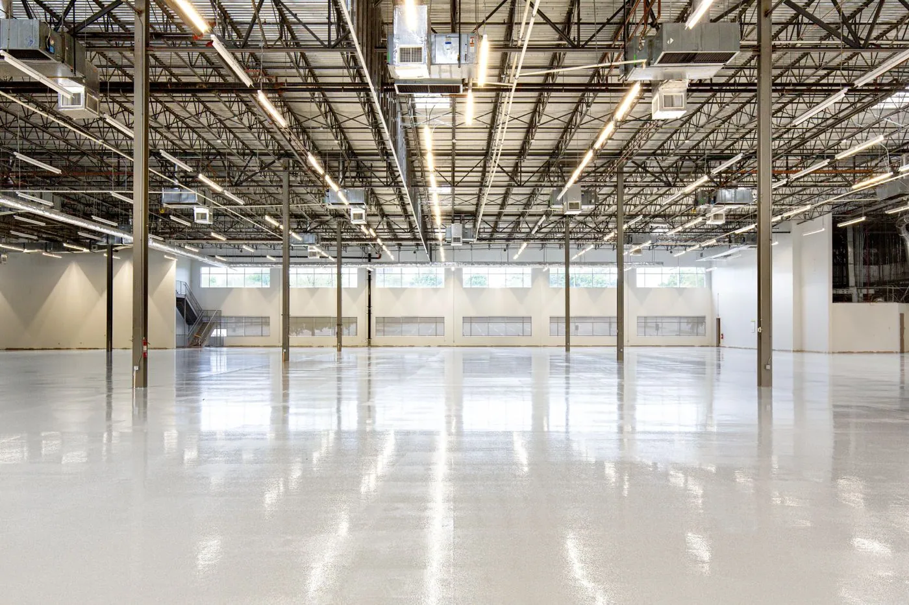
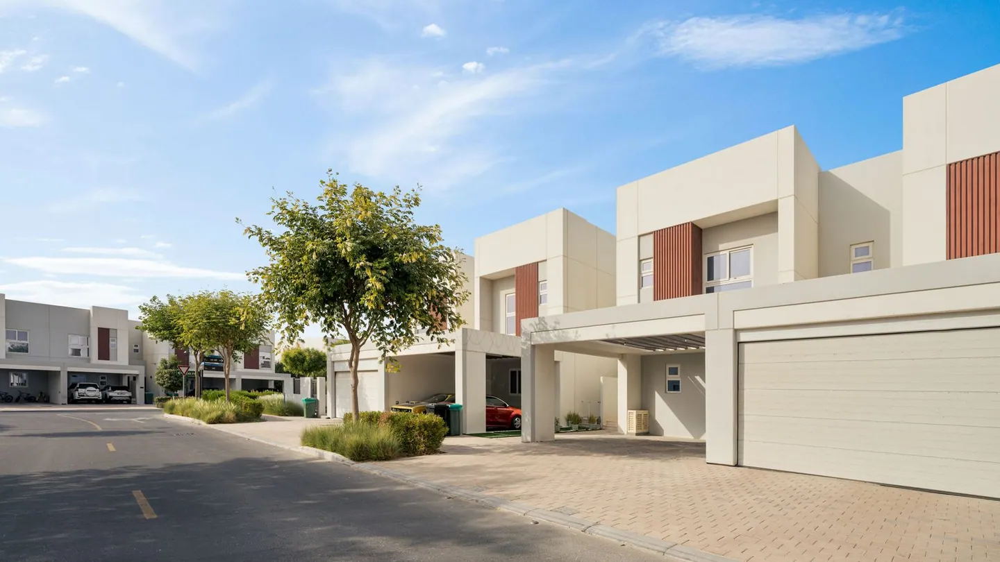
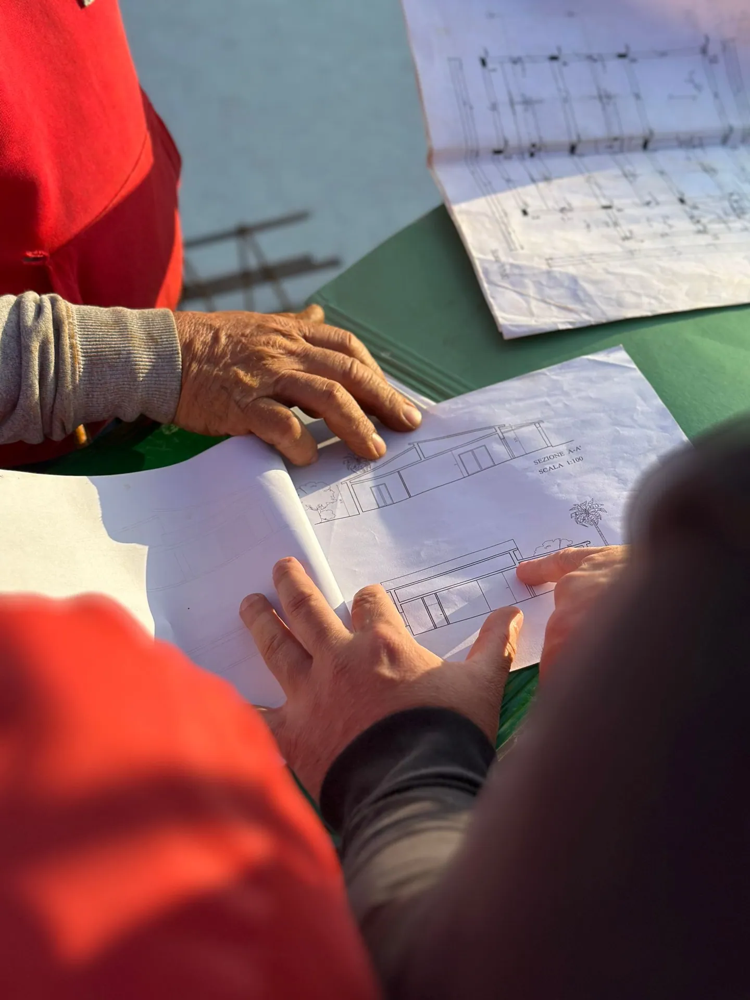

01
Proyectos residenciales
Espacios para vivir a tu manera.
Una casa empieza por entender tu forma de vivir y las posibilidades de tu terreno.
Consultar alcanceProyectos residenciales
Una casa empieza por entender tu forma de vivir y las posibilidades de tu terreno.
Consultar alcance
Proyectos comerciales
Comparte las necesidades de tu negocio y el tipo de espacio que tienes en mente.
Consultar alcance
Proyectos industriales
Conversemos sobre distribución, almacenamiento y necesidades de tu actividad.
Consultar alcance
Vivienda social
Viviendas funcionales adaptadas a las necesidades cotidianas de cada familia.
Consultar alcanceProyectos a tu medida
Tu terreno, tu presupuesto y tus prioridades son el punto de partida de la conversación.
Consultar alcance
Soluciones a medida
Si ya tienes una idea o planos, conversemos sobre lo necesario para llevarlos a la obra.
Consultar alcanceEL SIGUIENTE ESPACIO PUEDE SER EL TUYO